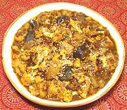

|
Cauliflower, Potato, Eggplant KormaIndia - Northwest - Sabzi Korma | ||||
| Serves: Effort: Sched: DoAhead: |
4 w/bread *** 2-1/4 hrs Yes |
Cauliflower is a luxury item in India, growing only in a few unusually cool regions - so cauliflower recipes are taken seriously. | |||
| This recipe is from the Moghul cuisine, so is softly and aromatically spiced. A bit of a prep job, but so good you might not even notice it's vegetarian. This dish is traditionally served with nan bread (pita will do in a pinch), but I usually serve it with Basmati rice because I always have that on hand. | |||||
|
1-1/2 8 6 6 2 1/2 1 1 3 3 ------ 1 1/2 1/2 1/4 1 ------ 3 1 1 ------ 1 |
# oz oz oz cl in # t T T --- T t t t t --- T c t --- T |
Cauliflower (1) Potatoes (2) Eggplants (3) Onion Garlic Ginger root Tomatoes, ripe Tomato paste Almonds, blanched Cilantro -- Spice mix Coriander seeds Fennel seeds Chili powder (4) Turmeric Salt ----------- Oil Water Garam Masala (5) -- Garnish Sesame seeds toasted |
PREP - (1 hr)
|
imv_caulipotato3 080316 r 120414 civgc230 -
www.clovegarden.com
©Andrew Grygus - agryg@aaxnet.com - Linking to and
non-commercial use of this page is permitted.